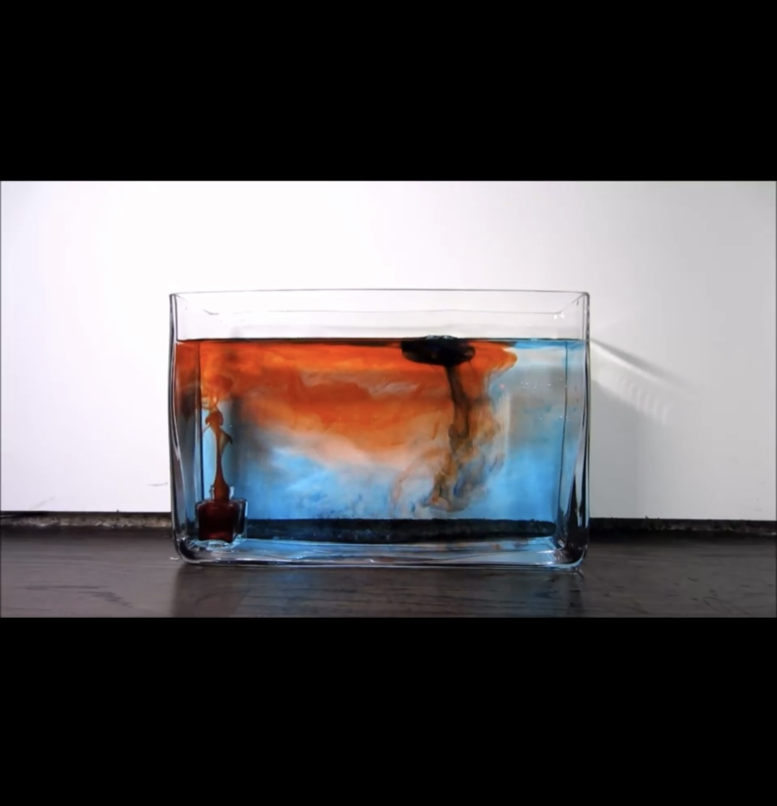
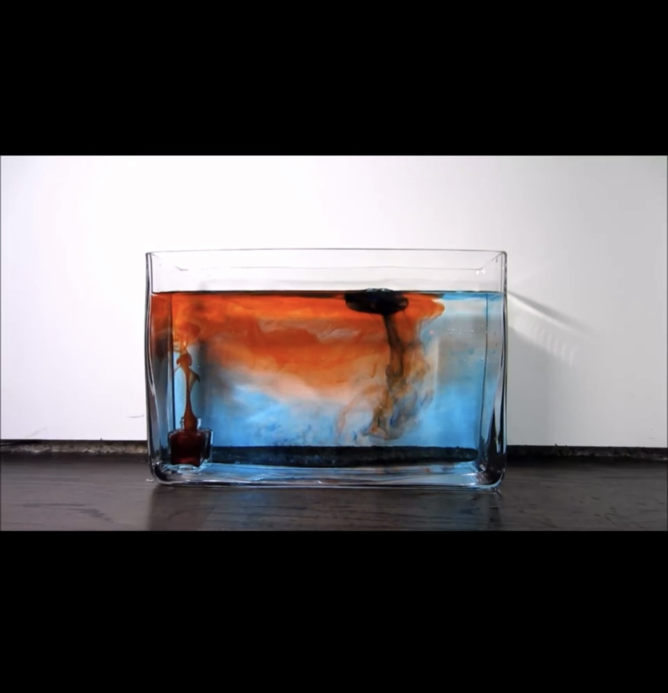

For my position as a Psychology Department Assistant, I had a chance to engage in practical work, building demo models of natural phenomena. This is an example that illustrates atmospheric cells.
For my position as a Psychology Department Assistant, I had a chance to engage in practical work, building demo models of natural phenomena. This is an example that illustrates atmospheric cells.
Rationale: Models are a crucial pedagogical tool to enhance students' understanding of scientific concepts. Models help students visualize abstract and complex scientific concepts.
Resources: Youtube videos and articles to understand the nature of atmospheric cells.
Description: In the development of the atmospheric circulation model project, I embarked on a journey marked by persistence and hands-on learning. The project began with a clear objective: to create a tangible representation of atmospheric cells to illustrate air circulation. Through multiple trials and iterations, I tested my resilience and determination, overcoming obstacles and refining my model along the way. The strength of the project lies in the dedication I invested, demonstrating a commitment to understanding complex scientific concepts through practical application. However, weaknesses emerged in the form of reliability issues. Despite numerous attempts, the model did not consistently behave as expected. This unreliability presented a significant challenge, leading to a deeper exploration of the project's intricacies. The problems encountered offered invaluable learning opportunities, fostering critical thinking and problem-solving skills. Moving forward, the experience encourages me to further iterate on the model, explore additional research avenues, and incorporate feedback to enhance both its reliability and overall effectiveness as an educational tool.
Building the atmospheric circulation model taught me persistence, adaptability, and hands-on skills in translating scientific concepts. The challenges, especially with reliability, emphasized the unpredictability of experimentation, fostering humility. Troubleshooting strengthened my problem-solving abilities, and the iterative process underscored the importance of continual improvement and learning from both successes and failures. Overall, the project enriched my scientific mindset, deepening my understanding and appreciation for practical applications of scientific principles.
